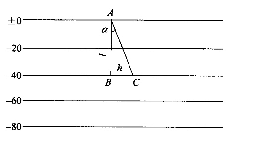

等值线图业务梳理
煤层底板等高线
等高线典型特征
- 等高线：高程相同的若干点连接而成的曲线。等高线是连续闭合曲线。稠密表示陡坡，稀疏表示缓坡。
等高线表示地形
山地：等高线标高值外小内大。
盆地：等高线标高值外大内小。
山脊：等高线凸出方向是坡度降低方向。
山谷：等高线凸出方向是坡度升高方向。
鞍状地形：等高线两个山头和两个山谷组成。等高线走向
煤层走向
煤层倾向
倾角

- 等高线向背表现
向斜：等高线凸出方向是标高升高的方向。（中间岩石新 两边岩石老）
背斜：等高线凸出方向是标高降低的方向。（中间岩石老 两边岩石新）
等高线绘制标准
- 基本等高线：根据基本等高距画的等高线，（如5m一根.20m一根）
- 加粗等高线：等高线较多的时候，反映不清楚情况，每隔4根加粗一根，只在加粗等高线上标出高程。
- 半距等高线：特殊情况下，基本等高线反应不清楚地形和地貌，可以在两基本等高线之间加划一根，
- 辅助等高线：加划半距等高线后，还不够清楚，可在基本等高线与半距等高线之间，按1/4等高距加划一根。
煤层底板等高线示例图
- 图名
- 图例
- 比例尺

断层分类
正断层：上盘相对下降，下盘相对上升。
逆断层：上盘相对上升，下盘相对下降。

平移断层：断层两盘沿水平方向相对移动。
操作流程
钻孔绘制

- 数据获取流程